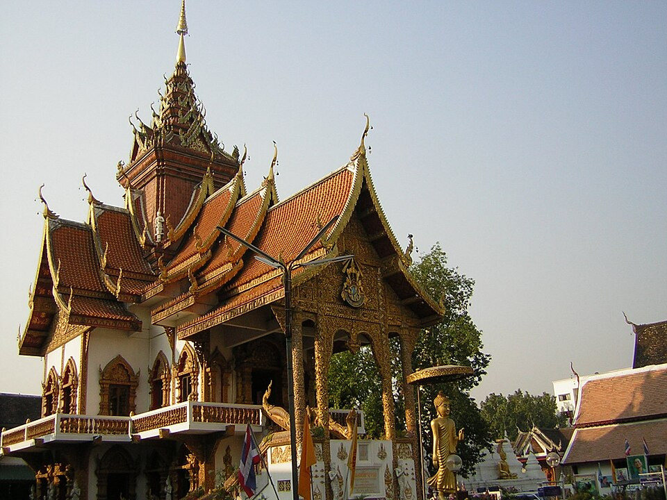

วัดบุพพาราม · Wat Bupparam
มีข้อมูลบางส่วนแล้ว — ช่วยเติมให้ครบได้ฟรี · Some details on record — help fill in the rest, free.

📷 Flying Pharmacist — CC BY-SA 3.0, via Wikimedia Commons
ตำแหน่งโดยประมาณ — วงกลมคือช่วงที่เป็นไปได้ · Approximate position — the circle is the range it could be in
🐜 ที่นี่ไม่มีเว็บของตัวเอง — หน้านี้คือที่บันทึกของมดแดง ใช้อ้างอิงและแชร์ได้เลย · This place keeps no website of its own — so this page is the record. Cite it, share it, link to it. เจ้าของยืนยันข้อมูลได้ฟรีที่นี่เจ้า · Owners: claim and correct it here, free
- หมวด · Category
- วัด-สิ่งศักดิ์สิทธิ์ · Wats & Sacred Places
- ชื่ออังกฤษ · English name
- Wat Bupparam
- ก่อตั้ง · Founded
- พ.ศ. 2039 · 1496 CE
- นิกาย · Nikaya
- มหานิกาย
- ประเภทวัด · Standing
- วัดราษฎร์
- วิสุงคามสีมา · Wisung-khamsima
- ได้รับ · 2070
- ตำบล-อำเภอ · Tambon and amphoe
- ต.ช้างคลาน · อ.เมืองเชียงใหม่
- รหัสวัด · Temple register code
- 03500105004 ทะเบียนวัด สำนักงานพระพุทธศาสนาแห่งชาติ ฉบับ พ.ศ. ๒๕๖๗ · from the National Office of Buddhism temple register, B.E. 2567 edition
- แผนที่ · Map
- OpenStreetMap · Google Maps
อ่านต่อที่อื่น · Read more elsewhere
- 😎 หน้าภาพในวิกิมีเดียคอมมอนส์ · Wikimedia Commons file page
- 😎 วัดนี้ในคลังวิชา — ประวัติ ความเชื่อ และการปฏิบัติ · This temple in the wichaa archive — its history and practice
😎 = พาไปอ่านเรื่องของที่นี่โดยตรง ไม่ใช่ปุ่มแชร์หรือลิงก์ประจำทุกหน้า · 😎 marks a link about this place itself — not a share button or something every page carries
🐜 ช่วยเติมเบอร์โทร และ LINEได้ไหมเจ้า · Could you help add phone and LINE? ขึ้นทันทีเลย · It shows at once.

{kind=link}
ข้อมูลจาก OpenStreetMap · Data from OpenStreetMap · 2026-07-21